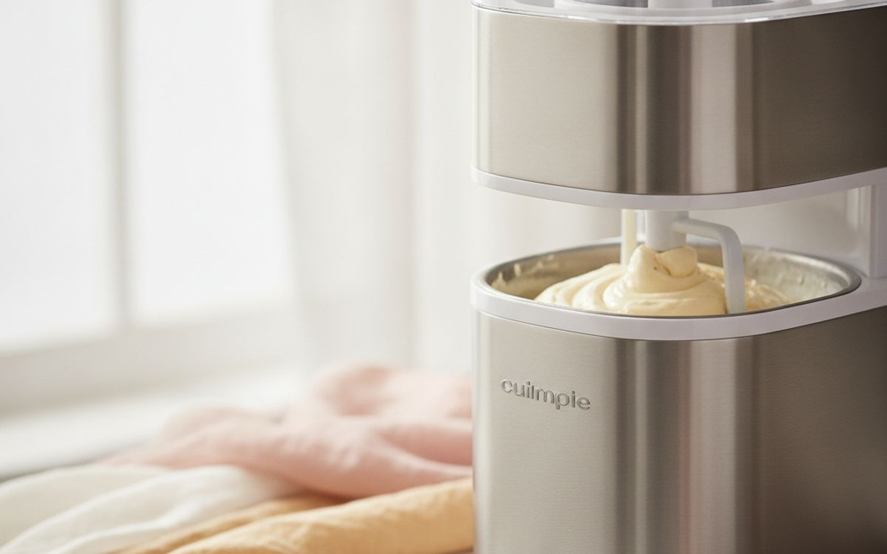
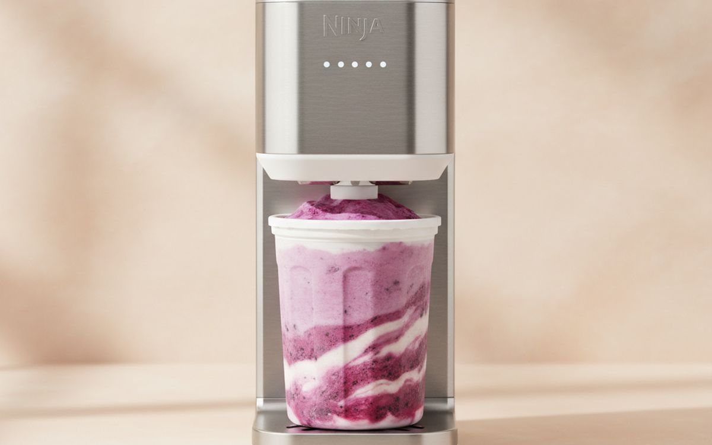
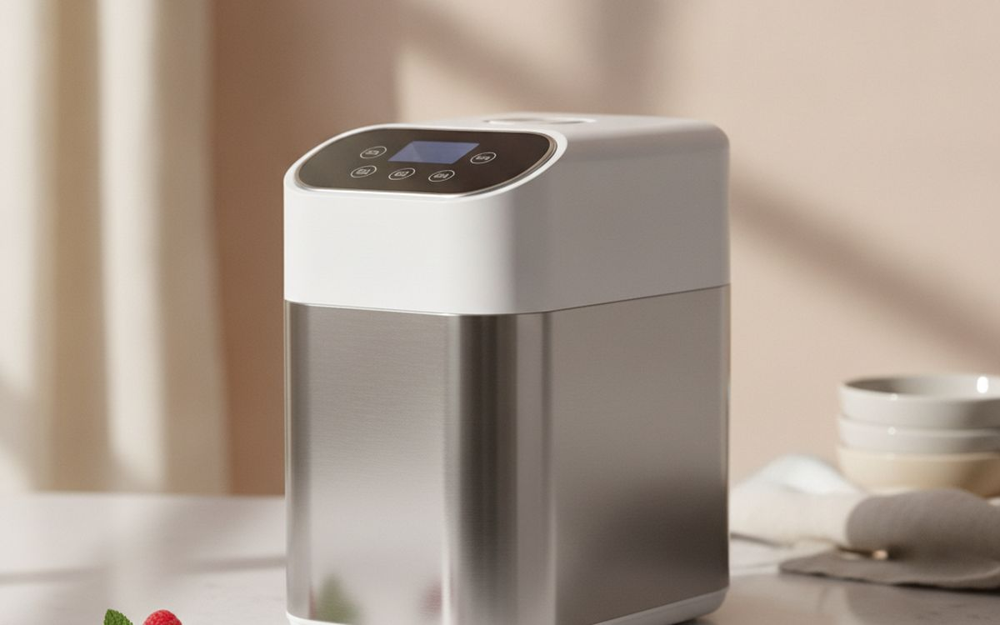
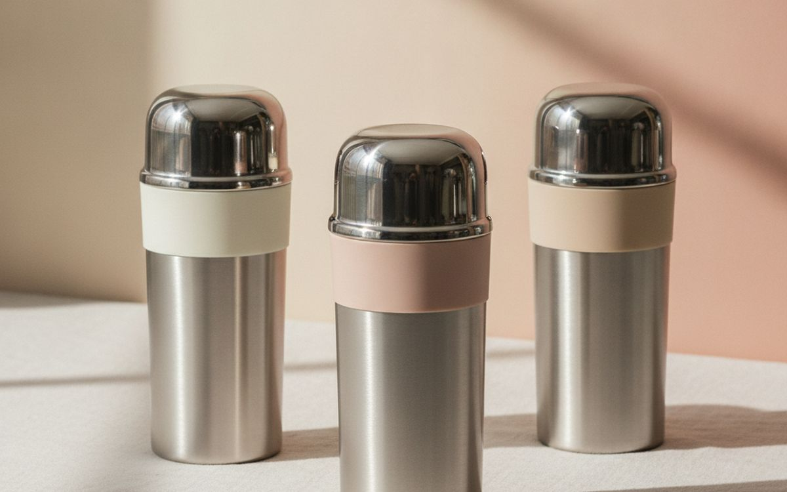
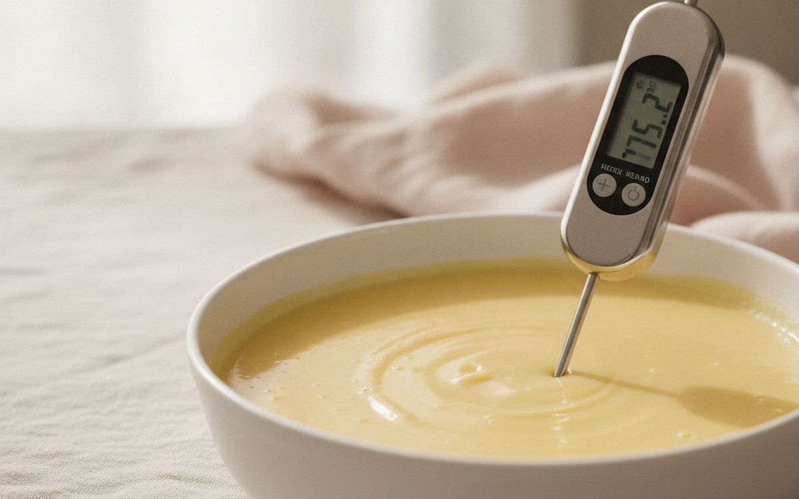
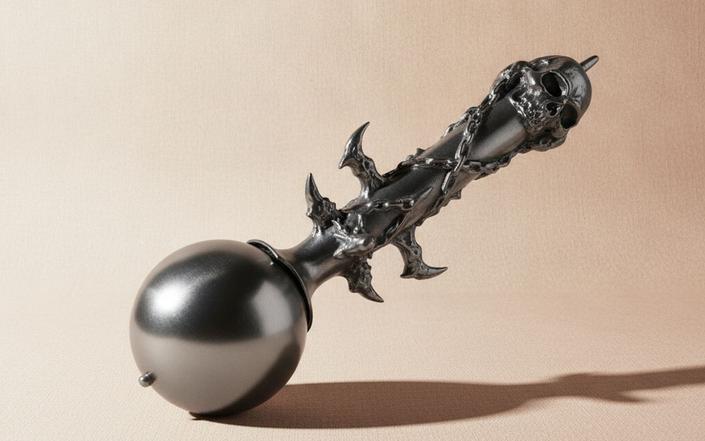
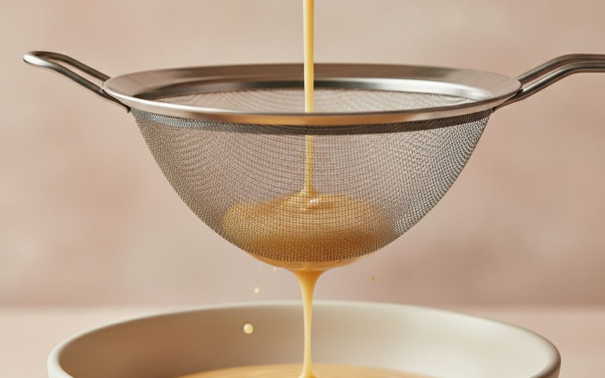
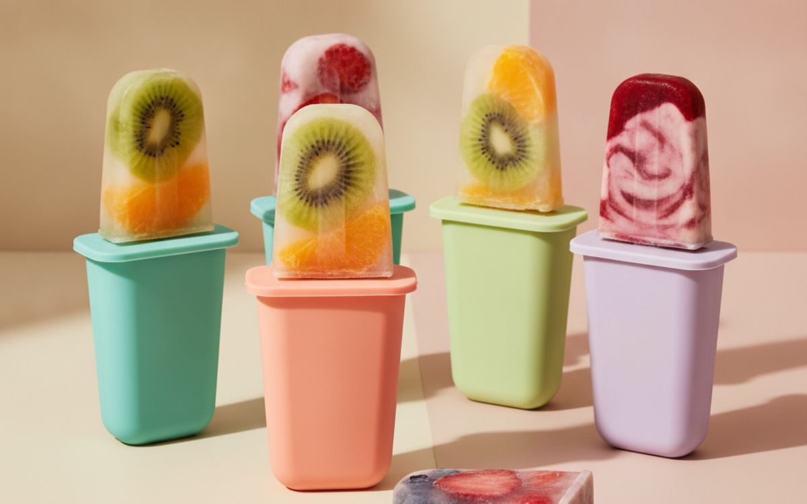
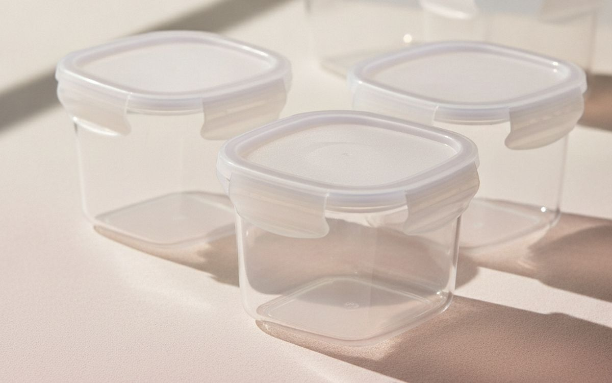
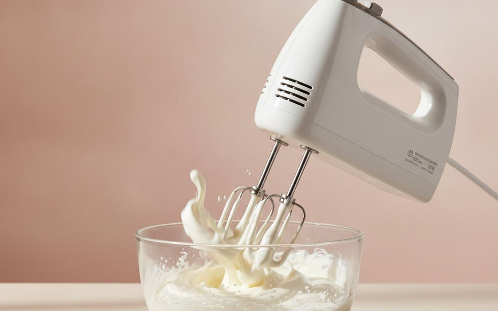

Homemade ice cream goes wrong in the same way for almost everyone: it comes out icy and hard, not smooth. The cause is slow freezing, which lets big ice crystals grow. Commercial ice cream freezes fast, is churned with air, and is made with ingredients that keep it soft.
This list is ordered by how much each item fixes that. A basic freezer-bowl machine gives a huge jump over no-churn. After that, it is about convenience, texture and storage.
Prices below are approximate street prices at the time of writing and move around constantly, especially during sale events. Treat them as a rough band for budgeting, not a quote. Always check the live listing before you buy.
Με λίγα λόγια
A freezer-bowl ice cream maker
The best value upgrade
Γνωστοποίηση. Οι σύνδεσμοι σε αυτή τη σελίδα είναι συνδεδεμένοι. Αν αγοράσετε μέσω κάποιου, ενδέχεται να λάβουμε προμήθεια χωρίς επιπλέον κόστος για εσάς. Δεν επηρεάζει το τι μπαίνει στη λίστα ούτε τη σειρά της.
Πώς επιλέξαμε
These picks come from published appliance testing, dessert-making communities and long-run owner reports, cross-checked against current retail listings. We have not personally tested every item here. For appliances, check the plug and voltage match your country, and buy from sellers with a clear warranty.
Με μια ματιά
Οι τιμές είναι ενδεικτικές κατά τη συγγραφή και αλλάζουν συχνά.
Οι επιλογές

01 · The best value upgradeA freezer-bowl ice cream maker
These machines use a double-walled bowl you freeze overnight, then churn the base for about 20 minutes. They make genuinely smooth ice cream for a modest price, and Cuisinart's models are the long-running favourites. The catch is planning: the bowl needs 12-24 hours in the freezer, so it is one batch a day unless you buy a second bowl. Keep the bowl in the freezer permanently if you have room. The case for it: smooth ice cream at a low price, simple to use, and churns in about 20 minutes. The trade-off is real: bowl needs freezing overnight and one batch at a time, so weigh that against how often it would actually get used.
$50-90Ο συμβιβασμός: Bowl needs freezing overnight
Γιατί είναι εδώ
- Smooth ice cream at a low price
- Simple to use
- Churns in about 20 minutes
Αξίζει να ξέρετε
- Bowl needs freezing overnight
- One batch at a time

02 · Single pints, protein and fruit ice creamA Ninja CREAMi-style processing machine
These work differently: you freeze the base solid in a pint tub, then a spinning blade shaves it into a creamy texture. They are brilliant for single servings, lighter protein ice creams and fruit sorbets, and each pint can be a different flavour. They are loud, and you need to plan the 24-hour freeze. Extra pint containers are almost essential. The case for it: great for single servings and protein ice cream, different flavours in each pint, and easy cleanup. The trade-off is real: loud, and bases need a full day to freeze and extra pints cost extra, so weigh that against how often it would actually get used.
$150-230Ο συμβιβασμός: Loud, and bases need a full day to freeze
Γιατί είναι εδώ
- Great for single servings and protein ice cream
- Different flavours in each pint
- Easy cleanup
Αξίζει να ξέρετε
- Loud, and bases need a full day to freeze
- Extra pints cost extra

03 · Serious makers, back-to-back batchesA compressor ice cream maker
A compressor machine has its own built-in freezer, so there is no pre-freezing and you can make batch after batch. It freezes fast, which gives very smooth results. They are big, heavy and expensive. For people who make ice cream every week or for parties, it is worth it; for occasional use, a freezer-bowl machine is fine. The case for it: no pre-freezing, back-to-back batches, and very smooth results. The trade-off is real: big and heavy on the counter and expensive, so weigh that against how often it would actually get used.
$250-450Ο συμβιβασμός: Big and heavy on the counter
Γιατί είναι εδώ
- No pre-freezing
- Back-to-back batches
- Very smooth results
Αξίζει να ξέρετε
- Big and heavy on the counter
- Expensive

04 · Storage without freezer burnInsulated ice cream tubs
Homemade ice cream is at its best the day it is made and gets icy in ordinary containers. Long, shallow insulated tubs with tight lids freeze evenly, resist freezer burn and are easy to scoop from. Press a piece of baking paper onto the surface before closing for extra protection. The case for it: less freezer burn, easy scooping shape, and reusable. The trade-off is real: takes freezer space and still best eaten within a week or two, so weigh that against how often it would actually get used. At $15-30, it earns its place on this list without asking for a big up-front commitment either way.
$15-30Ο συμβιβασμός: Takes freezer space
Γιατί είναι εδώ
- Less freezer burn
- Easy scooping shape
- Reusable
Αξίζει να ξέρετε
- Takes freezer space
- Still best eaten within a week or two

05 · Custard basesAn instant-read thermometer
Classic custard ice cream is cooked to about 170-180°F. Go too far and the eggs scramble. A fast instant-read thermometer takes the guesswork out, and it is useful for everything from roast chicken to caramel. The case for it: stops custard scrambling, useful across the kitchen, and fast readings. The trade-off is real: cheap ones are slow to read and needs batteries, so weigh that against how often it would actually get used. For $15-30, it is a small, low-risk addition to the list rather than a centrepiece purchase you need to think hard about.
$15-30Ο συμβιβασμός: Cheap ones are slow to read
Γιατί είναι εδώ
- Stops custard scrambling
- Useful across the kitchen
- Fast readings
Αξίζει να ξέρετε
- Cheap ones are slow to read
- Needs batteries

06 · Scooping hard ice creamA heavy-duty ice cream scoop
Homemade ice cream freezes harder than shop-bought because it has less air and stabiliser. A heavy aluminium scoop with a thick handle, like the Zeroll style, cuts through hard ice cream with less effort. Hand wash; dishwashers ruin some of them. The case for it: scoops hard ice cream easily, comfortable grip, and lasts for years. The trade-off is real: some types are hand-wash only and heavier than cheap scoops, so weigh that against how often it would actually get used. Priced around $12-25, it is easy to justify even if it only ends up getting occasional rather than daily use.
$12-25Ο συμβιβασμός: Some types are hand-wash only
Γιατί είναι εδώ
- Scoops hard ice cream easily
- Comfortable grip
- Lasts for years
Αξίζει να ξέρετε
- Some types are hand-wash only
- Heavier than cheap scoops

07 · Smooth custardA fine mesh sieve
Straining the cooked base catches any bits of cooked egg and vanilla pod, giving a silky texture. It is a small step with a big payoff. You probably already have a sieve; a fine mesh one is best. The case for it: silkier ice cream, catches cooked bits, and useful all over the kitchen. The trade-off is real: fine mesh is slow with thick bases and clean immediately before it dries, so weigh that against how often it would actually get used. At $10-20, it earns its place on this list without asking for a big up-front commitment either way.
$10-20Ο συμβιβασμός: Fine mesh is slow with thick bases
Γιατί είναι εδώ
- Silkier ice cream
- Catches cooked bits
- Useful all over the kitchen
Αξίζει να ξέρετε
- Fine mesh is slow with thick bases
- Clean immediately before it dries

08 · Ice lollies for kidsPopsicle moulds
Fruit juice, yoghurt or leftover ice cream base become lollies with no machine at all. Silicone moulds release easily; hard plastic ones with sticks are sturdier. A great summer activity for kids and a way to use up fruit. The case for it: no machine needed, kid-friendly, and uses up fruit. The trade-off is real: silicone moulds can tip over in the freezer and cheap plastic cracks, so weigh that against how often it would actually get used. For $12-25, it is a small, low-risk addition to the list rather than a centrepiece purchase you need to think hard about.
$12-25Ο συμβιβασμός: Silicone moulds can tip over in the freezer
Γιατί είναι εδώ
- No machine needed
- Kid-friendly
- Uses up fruit
Αξίζει να ξέρετε
- Silicone moulds can tip over in the freezer
- Cheap plastic cracks

09 · Several flavours at onceExtra pint containers for your machine
If you have a CREAMi-style machine, extra pints let you freeze several bases at once and are the difference between ice cream tonight or tomorrow. Buy the containers for your exact model; lids and sizes differ between versions. The case for it: several flavours ready to go, makes the machine far more useful, and stackable. The trade-off is real: must match your exact model and third-party ones may fit poorly, so weigh that against how often it would actually get used. Priced around $15-30, it is easy to justify even if it only ends up getting occasional rather than daily use.
$15-30Ο συμβιβασμός: Must match your exact model
Γιατί είναι εδώ
- Several flavours ready to go
- Makes the machine far more useful
- Stackable
Αξίζει να ξέρετε
- Must match your exact model
- Third-party ones may fit poorly

10 · No-churn ice creamA hand mixer
No-churn ice cream, made by whipping cream and folding in condensed milk, needs no machine and is surprisingly good. A hand mixer whips the cream in a few minutes. It is sweeter and richer than churned ice cream, but a great way to try before buying a machine. The case for it: no ice cream machine needed, quick, and useful for all baking. The trade-off is real: texture is less smooth than churned and recipes are very sweet, so weigh that against how often it would actually get used. At $25-50, it earns its place on this list without asking for a big up-front commitment either way.
$25-50Ο συμβιβασμός: Texture is less smooth than churned
Γιατί είναι εδώ
- No ice cream machine needed
- Quick
- Useful for all baking
Αξίζει να ξέρετε
- Texture is less smooth than churned
- Recipes are very sweet
Συχνές ερωτήσεις
Why is my homemade ice cream icy?
Usually slow freezing or too much water in the base. Chill the base well, make sure the bowl is fully frozen and eat it within a week or two.
Freezer-bowl, compressor or CREAMi-style?
Freezer-bowl for value, compressor for frequent batches, CREAMi-style for single pints and protein or fruit recipes.
How long does homemade ice cream keep?
It is best within one to two weeks in an airtight tub.
Can I make ice cream without a machine?
Yes. No-churn recipes with whipped cream and condensed milk work well.
Οι προσφορές σήμερα
Δείτε τι είναι σε έκπτωση αυτή τη στιγμή.
Προσφορές →← Όλοι οι οδηγοί
Ως συνεργάτες της AliExpress, κερδίζουμε από επιλέξιμες αγορές. Οι τιμές και η διαθεσιμότητα ισχύουν κατά την ημερομηνία δημοσίευσης και ενδέχεται να αλλάξουν.